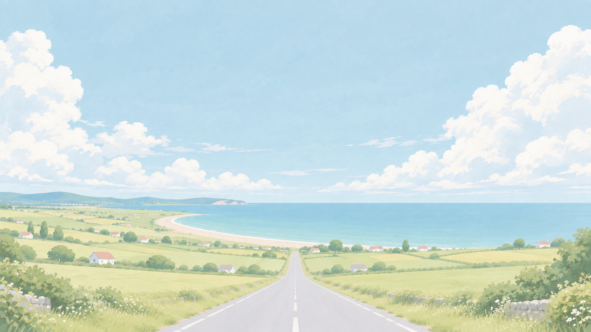

壁纸从正文区透出，左右侧栏半透明悬浮，顶栏与工具栏保持实色。
正在准备海岸景物…
关闭背景设置后，恢复跟随打字。调节值自动保存在本机。
保留原画云群，缓缓向两侧涌动；正文周围的位移平滑减到零。
开启后海湾的浪缓缓拍打岸边（约 5 秒一个循环）；正文后面的浪停在固定位置。
输入区占满整个编辑区高度，光标越过设定位置（默认 65%）时才自动滚屏。正文及两侧安全距离内的背景静止；滚屏暂停动效，下次输入后继续。